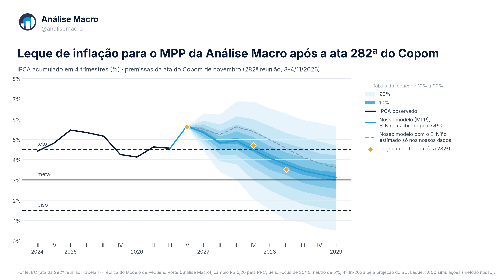

Modelo de Pequeno Porte do Banco Central em Python

Atualizado em 19/11/2026: versão 4 do modelo, com as premissas da ata da 282ª reunião do Copom.
- Painel interativo: escolha o câmbio, a Selic, o petróleo e o El Niño e veja a projeção e o leque de inflação: analisemacro.shinyapps.io/mpp-analise-macro
- Paper (PDF): as equações, a estimação e a comparação com o Banco Central: baixar o paper
O problema
O Banco Central projeta a inflação com um conjunto de modelos. O mais transparente deles é o Modelo de Pequeno Porte (MPP): um modelo semiestrutural deliberadamente parcimonioso, cuja função é menos prever com máxima acurácia do que organizar de forma clara o raciocínio condicional que sustenta a decisão de política monetária.
O BCB publica a estrutura das equações nos boxes dos Relatórios e, desde 2020, as tabelas de parâmetros estimados. Mas não publica o código nem a base de dados. Para quem quer usar o modelo, e não apenas ler suas projeções, isso é uma parede.
Este projeto atravessa essa parede: reconstrói o modelo em Python, mede o quão perto se chega das projeções oficiais e põe o modelo num painel em que qualquer pessoa muda as premissas e vê a projeção.
O modelo
Equações estimadas uma a uma, ligadas por identidades, em frequência trimestral.
| Bloco | Papel |
|---|---|
| Curva IS | Hiato do produto responde ao juro real acima do neutro |
| Curva de Phillips dos livres | Na forma do modelo agregado do BC (RI jun/2024): inércia dos livres e do IPCA, expectativas, commodities em reais (IC-Br), câmbio contra a paridade, hiato, cadeias de suprimento e El Niño |
| Preços administrados | Na ponderação do modelo de administrados do BC (RPM jun/2025): petróleo em reais, Itaipu, remédios e inflação passada |
| Expectativas | Em desvio da meta, com inércia, inflação passada e a inflação que o próprio modelo projeta |
| Regra de Taylor | Selic reage ao desvio das expectativas em relação à meta |
| Câmbio | Paridade de juros e paridade do poder de compra |
Selic, câmbio e preços administrados são endógenos: o modelo os projeta sozinho, em vez de recebê-los como hipótese. Um aperto monetário aprecia o câmbio, e a apreciação realimenta a inflação: o canal cambial de transmissão fica operante.
Estimados só com os nossos dados, os coeficientes chegam perto dos publicados pelo BC:
| Parâmetro | Modelo | BC (RI jun/2024) |
|---|---|---|
| Commodities em reais na curva de Phillips | 0,023 | 0,023 |
| Câmbio contra a paridade na curva de Phillips | 0,008 | 0,011 |
| Inércia das expectativas | 0,77 | 0,75 |
| Reação da Selic ao desvio das expectativas | 1,71 | 2,03 |
A base é recoletada das fontes primárias (Banco Central, IBGE, FRED, NOAA), o que torna o exercício atualizável: o modelo roda com os dados de hoje, até o 3º trimestre de 2026.
Os resultados
Os experimentos dos boxes do BC
| Experimento | Modelo | BC |
|---|---|---|
| Selic +1 p.p. por 4 trimestres, depois a regra de Taylor: efeito máximo no IPCA em 12 meses | −0,29 p.p., no 4º trimestre | −0,27 p.p. no 4º (agregado, RI jun/2024) |
| Depreciação permanente de 10% do real: efeito máximo no IPCA em 12 meses | 1,08 p.p. | 0,96 (RI jun/2024) e 1,0 (RPM jun/2025) |
No repasse, o total fica perto do BC, mas a composição não: os administrados sobem mais no modelo (2,15 p.p. contra 1,65) e os livres, menos (0,62 contra 0,72).
Depois da ata da 282ª reunião do Copom
Em novembro, o Copom atualizou o cenário: câmbio partindo de R$ 5,20, Selic do Focus e petróleo em queda. A ata publica três pontos da projeção:
| IPCA em 4 trimestres | 2026 | 2027 | 2º tri/2028 |
|---|---|---|---|
| Copom (ata 282ª) | 5,6% | 4,7% | 3,5% |
| Modelo | 5,6% | 4,5% | 3,5% |
O ano de 2026 coincide por construção: o primeiro trimestre da projeção segue o curto prazo do BC. Pelo leque, a chance de o IPCA passar do teto da meta é de 52% em 2027 e de 15% em 2028.
Com as premissas do Relatório de setembro
| IPCA em 4 trimestres | 2026 | 2027 | 1º tri/2028 |
|---|---|---|---|
| BCB (RPM set/2026) | 5,2% | 3,9% | 3,2% |
| Modelo | 5,2% | 3,8% | 3,4% |
Até o início de 2028 o modelo acompanha o Relatório. Daí em diante fica abaixo: 2,4% no fim de 2028 e 2,3% no início de 2029, contra 3,1% do BC. No conjunto dos dez trimestres da tabela oficial, o erro absoluto médio é de 0,37 ponto.
O dólar depois da eleição
A ata usou câmbio de R$ 5,20. Rodando o modelo com o câmbio de antes da eleição (R$ 5,04) e com o de meados de novembro (R$ 5,79), a diferença no IPCA em quatro trimestres é de +0,3 ponto em 2026, +1,3 em 2027 e +1,0 no 2º trimestre de 2028. O canal mais forte é o petróleo em reais, seguido das commodities, das expectativas e da indexação dos administrados.
O El Niño pesa no número
O episódio de 2026 é intenso, e o seu efeito é a premissa mais sensível. O modelo calibra o efeito líquido pela evidência que o próprio BC publicou: no Questionário Pré-Copom, a mediana dos analistas é de 0,85 ponto no IPCA em dois anos para um El Niño como o de 2014-15. Parte da alta é devolvida um ano depois, quando os preços dos alimentos se normalizam.
A distância honesta
Cabe uma ressalva, porque a tentação de apresentar o resultado como “a projeção do Banco Central” é real, e seria incorreto.
Este não é o modelo vigente do BCB. Desde 2020, o Banco Central estima o hiato do produto e o juro real neutro como variáveis latentes, com estimação bayesiana do sistema inteiro. Aqui, as equações são estimadas uma a uma, e o hiato e o neutro vêm de filtros estatísticos. A estrutura das equações é a do modelo atual; a estimação é a da tradição anterior.
Três escolhas também são nossas, e não do BCB: o primeiro trimestre fixado pela projeção oficial, o tamanho do efeito do El Niño e o método do leque e das probabilidades, que o Banco Central não publica.
As projeções produzidas aqui não são as do Banco Central e não devem ser apresentadas como tais. A proximidade medida acima mostra que a estrutura captura o essencial do mecanismo de transmissão.
O curso
A leitura e a construção de um modelo como este (de onde vem cada premissa, o que significa um leque, por que as expectativas demoram a ceder, como o câmbio passa para os preços e o que mudou no BCB em 2020) são o assunto do curso Modelos do Banco Central, com turma ao vivo a partir de 5 de dezembro de 2026 e trilha de implementação em R ou Python.